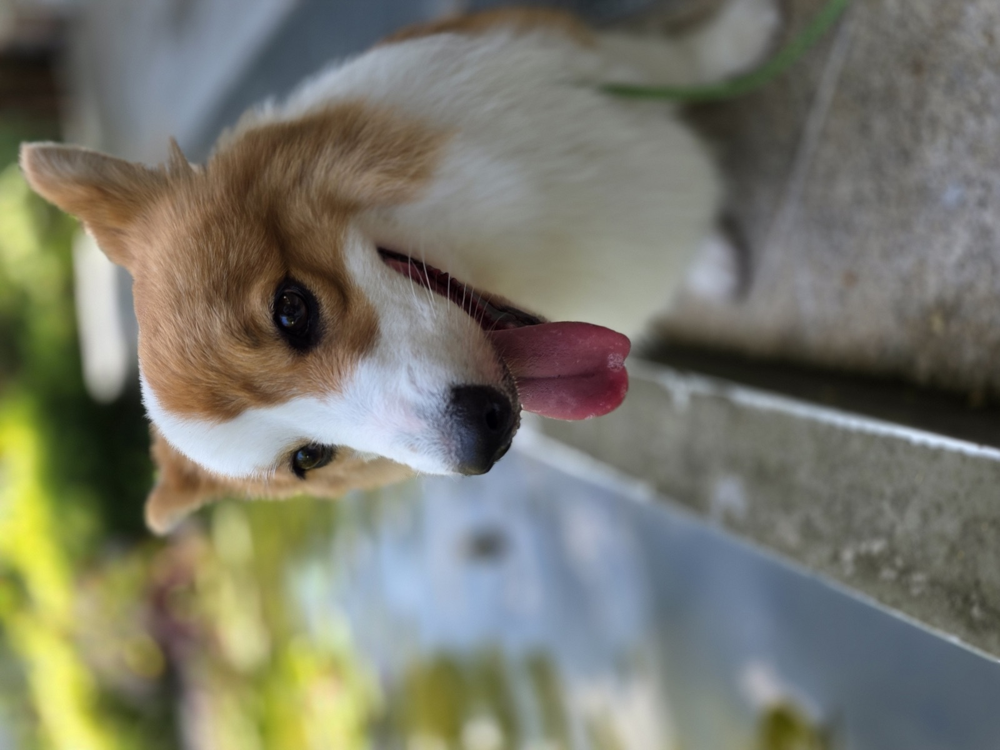
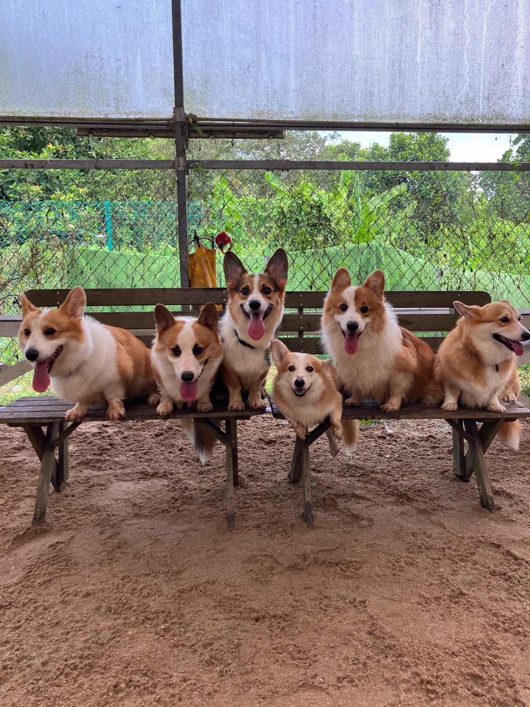

Welcome to the official
Zoomie champion · Snack negotiator · Full-time good boy

About Churro
Born on 2 April 2025, Churro is a proud Singapore-bred corgi — the only pup in his litter, which frankly explains a lot about the confidence. Local parents, local upbringing, internationally recognized cuteness.
Now clocking in at 1 year 4 months, he's a low-rider with a big personality — short legs, tall opinions. Built for speed in a body built for napping, he splits his time between full-send zoomies and strategic, high-effort loafing.
Fluent in puppy-eyes, professionally trained in the art of "I heard a snack bag from two rooms away," Churro treats every walk like a red-carpet event and every stranger like a potential fan.
Personality
Achieves maximum velocity indoors, outdoors, and directly through the living room furniture.
World-class at converting any sunbeam, couch cushion, or unattended laundry pile into a bed.
Opens every negotiation with the eyes. Closes every negotiation with the eyes.
Knows every dog at the park by scent, every human by pocket-treat probability.
Responds instantly to "walk" and "treat." Everything else requires a second, louder attempt.
Has a better photo portfolio than most influencers. Tongue-out is the signature pose.
Churro in motion
Press play. Volume optional, enthusiasm mandatory.
Gallery
A carefully curated collection of the goodest angles.

Churro (center stage, obviously) with the crew.